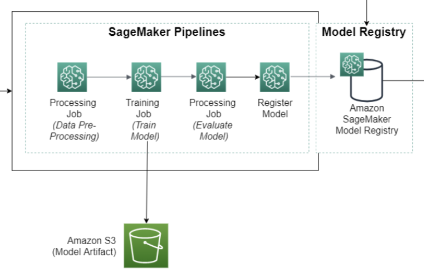

What is a SageMaker Project?
SageMaker Projects help organizations set up and standardize developer environments for data scientists and CI/CD systems for MLOps engineers. Projects also help organizations set up dependency management, code repository management, build reproducibility, and artifact sharing.
You can provision SageMaker Projects from the AWS Service Catalog using custom or SageMaker-provided templates. For information about the AWS Service Catalog, see What Is AWS Service Catalog. With SageMaker Projects, MLOps engineers and organization admins can define their own templates or use SageMaker-provided templates. The SageMaker-provided templates bootstrap the ML workflow with source version control, automated ML pipelines, and a set of code to quickly start iterating over ML use cases.
When Should You Use a SageMaker Project?
While notebooks are helpful for model building and experimentation, a team of data scientists and ML engineers sharing code needs a more scalable way to maintain code consistency and strict version control.
Every organization has its own set of standards and practices that provide security and governance for its AWS environment. SageMaker provides a set of first-party templates for organizations that want to quickly get started with ML workflows and CI/CD. The templates include projects that use AWS-native services for CI/CD, such as AWS CodeBuild, AWS CodePipeline, and AWS CodeCommit. The templates also offer the option to create projects that use third-party tools, such as Jenkins and GitHub. For a list of the project templates that SageMaker provides, see Use SageMaker-Provided Project Templates.
Organizations often need tight control over the MLOps resources that they
provision and manage. Such responsibility assumes certain tasks, including
configuring IAM roles and policies, enforcing resource tags, enforcing encryption,
and decoupling resources across multiple accounts. SageMaker Projects can support all
these tasks through custom template offerings
where organizations use AWS CloudFormation templates to define the resources needed for an
ML workflow. Data Scientists can choose a template to bootstrap and pre-configure
their ML workflow. These custom templates are created as Service Catalog products and you can
provision them in the Studio UI under Organization
Templates. The Service Catalog is a service that helps organizations create and
manage catalogs of products that are approved for use on AWS. For more information
about creating custom templates, see Build Custom SageMaker Project Templates – Best Practices
SageMaker Projects can help you manage your Git repositories so that you can collaborate more efficiently across teams, ensure code consistency, and support CI/CD. SageMaker Projects can help you with the following tasks:
-
Organize all entities of the ML lifecycle under one project.
-
Establish a single-click approach to set up standard ML infrastructure for model training and deployment that incorporates best practices.
-
Create and share templates for ML infrastructure to serve multiple use cases.
-
Leverage SageMaker-provided pre-built templates to quickly start focusing on model building, or create custom templates with organization-specific resources and guidelines.
-
Integrate with tools of your choice by extending the project templates. For an example, see Create a SageMaker Project to integrate with GitLab and GitLab Pipelines
. -
Organize all entities of the ML lifecycle under one project.
What is in a SageMaker Project?
Customers have the flexibility to set up their projects with the resources that best serve their use case. The example below showcases the MLOps setup for an ML workflow, including model training and deployment.
A typical project with a SageMaker-provided template might include the following:
-
One or more repositories with sample code to build and deploy ML solutions. These are working examples that you can clone locally and modify for your needs. You own this code and can take advantage of the version-controlled repositories for your tasks.
-
A SageMaker pipeline that defines steps for data preparation, training, model evaluation, and model deployment, as shown in the following diagram.
 -
A CodePipeline or Jenkins pipeline that runs your SageMaker pipeline every time you check in a new version of the code. For information about CodePipeline, see What is AWS CodePipeline. For information about Jenkins, see Jenkins User Documentation
. -
A model group that contains model versions. Every time you approve the resulting model version from a SageMaker pipeline run, you can deploy it to a SageMaker endpoint.
Each SageMaker project has a unique name and ID that are applied as tags to all of the SageMaker and AWS resources created in the project. With the name and ID, you can view all of the entities associated with your project. These include:
-
Pipelines
-
Registered models
-
Deployed models (endpoints)
-
Datasets
-
Service Catalog products
-
CodePipeline and Jenkins pipelines
-
CodeCommit and third-party Git repositories
Do I Need to Create a Project to Use SageMaker Pipelines?
No. SageMaker pipelines are standalone entities just like training jobs, processing jobs, and other SageMaker jobs. You can create, update, and run pipelines directly within a notebook by using the SageMaker Python SDK without using a SageMaker project.
Projects provide an additional layer to help you organize your code and adopt operational best practices that you need for a production-quality system.